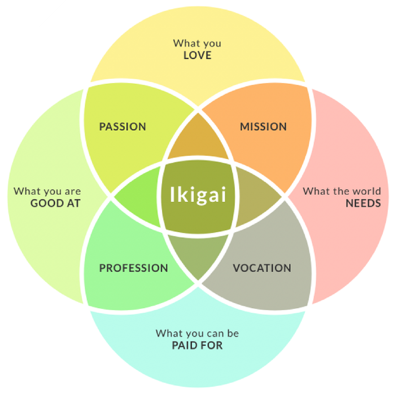
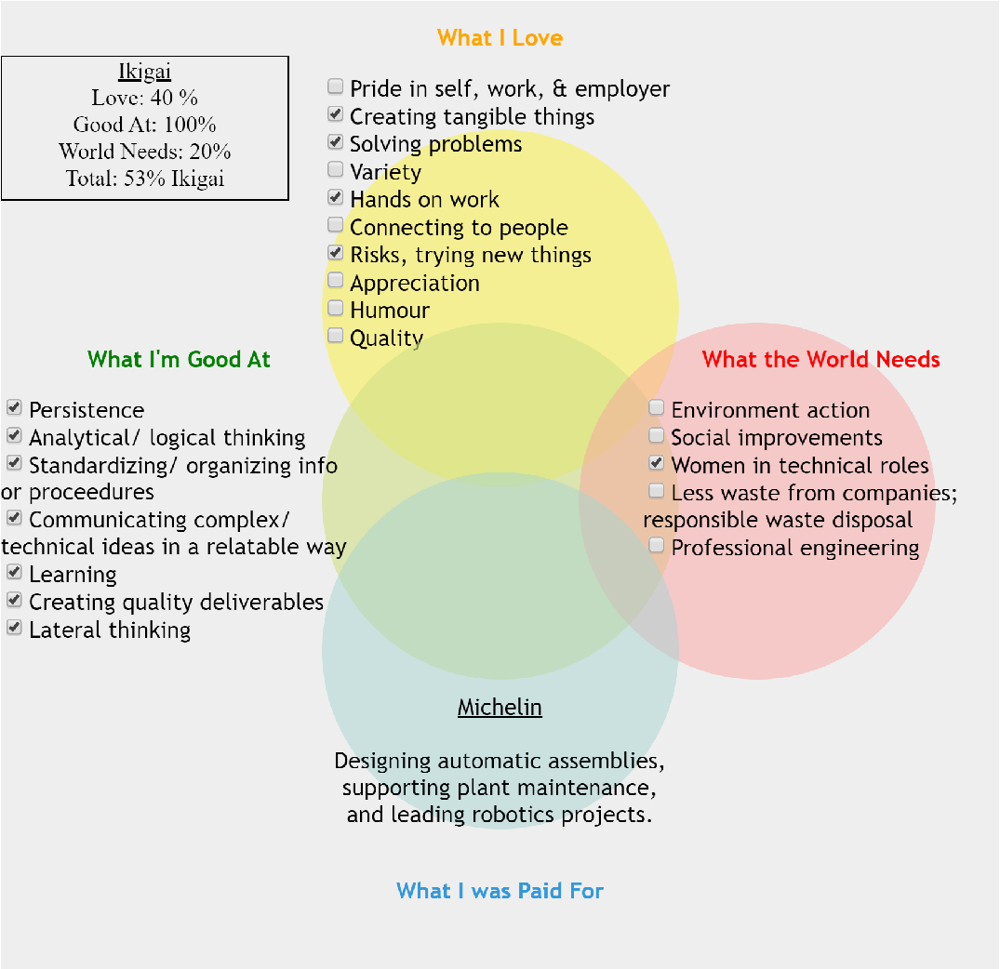
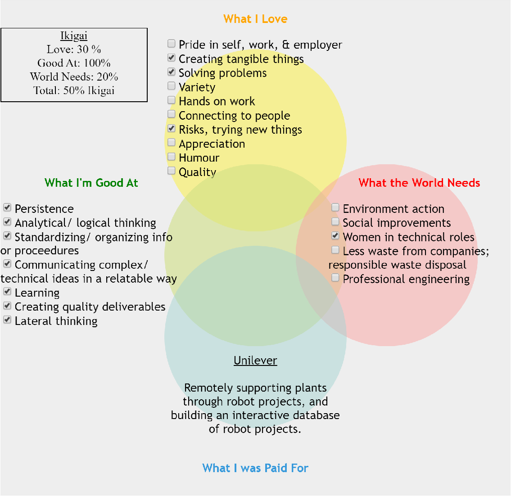
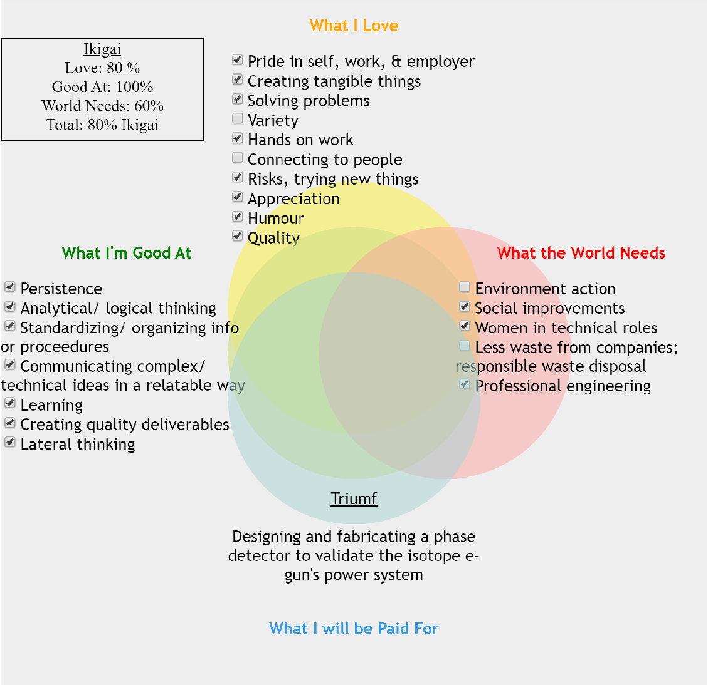

Why do you work? Is it to support your family, or fund your hobbies? Or are you motivated by your values; the impact you can have on the world through your work?
There is a Japanese concept called Ikigai (ick-ee-guy) that suggests that your “reason for being” can be examined through the use of a Venn diagram:

This sense of satisfaction, of using my skills and energy to make the world a better place, is what I have been searching for since entering my professional life. So why am I still searching?
To answer that question, I set out to make my own Ikigai Venn diagram.
As much effort went into figuring out which bullet points to include and leave out for each category, as into brushing up on my HTML basics and learning JavaScript for the first time.
Here are my results, for the two jobs I’ve worked post-graduation, and my favorite co-op internship for comparison:



This is all very subjective of course – Michelin and Unilever are both leaders in their industries, filled with lots of innovation and many opportunities. However, to paint with broad strokes from my experiences, it seems like Michelin used to be an engineering powerhouse – and has since outsourced and standardized the bulk of the engineering – and Unilever wants to be an engineering powerhouse – and is taking some first steps towards bringing in expertise and creating an environment to foster this, which is no mean feat for a company with such size and inertia.
I’m currently focused on growing my skills – learning the tricks of the trade, and picking up professional habits. It makes sense that I’m solidly in the “profession” segment of that Ikigai diagram.
But these past few years I have made changes in my personal lifestyle to address the world’s environmental needs, and I did throw caution to the wind and cycle across Europe so as not to neglect the adventure, risk, human connection, and physicality that I love.
Maybe I’ll find a job that will check more of these boxes, and both parties will reap the benefits. But in the meantime… in the JavaScript code box there are three arrays near the top which you are welcome to personalize.
How does your workplace Ikigai look?